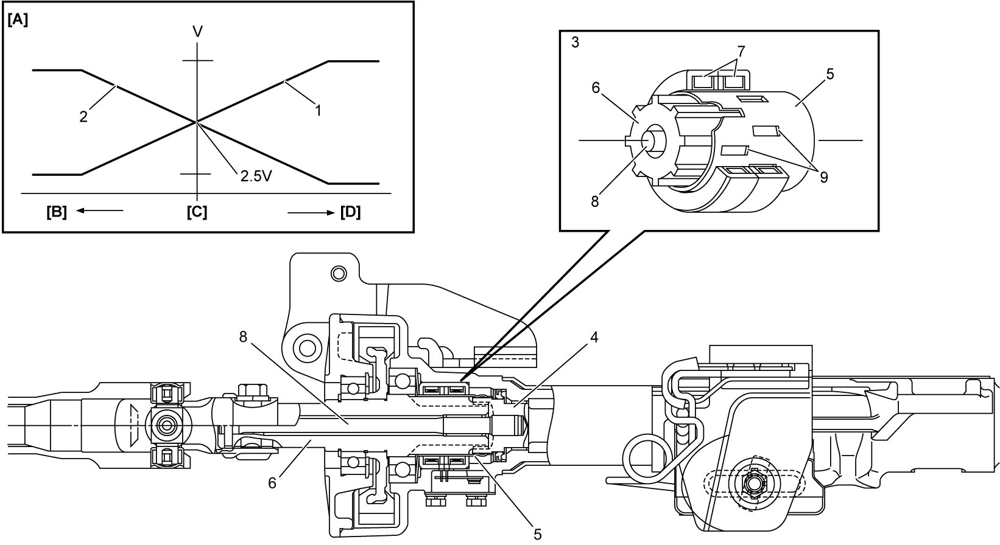
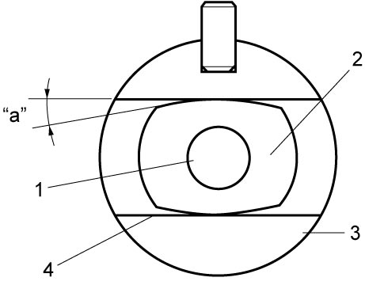

6C
| Description of EPS System Component Function |
| EPS system components | Function | ||
|---|---|---|---|
| Steering column assembly | Torque sensor | Using two circuits (i.e. main and sub circuits), torque sensor outputs voltages proportional to steering input torque and direction to P/S control module. | |
| P/S control module / motor assembly | P/S motor | P/S motor produces steering assist torque that correspond to electric current from P/S control module. | |
| P/S control module |
•P/S control module controls P/S motor drive current by determining its amount and direction of assistance based on voltage signal from torque sensor, vehicle speed and other data which are received via CAN communication.
•P/S control module judges whether engine is running or not using engine speed signal from CAN |
||
| P/S warning light | Refer to OBD System Description for operation of the P/S warning light. | ||
Steering Column Assembly
Steering column assembly mainly consists of torque sensor shaft (input shaft) from steering wheel, worm wheel shaft (output shaft) to steering gear case, torsion bar connecting the input and output shafts, torque sensor and P/S motor.
Torque sensor
Torque sensor adopts a non-contact inductance sensing system, and consists of stationary sensor sleeve and sensing coils on torque sensor shaft (input shaft), worm wheel shaft (output shaft) and amplifier which outputs signal from each coil to P/S control module. The sensor sleeve is located under the sensing coils and provides slits displacing their pitch. On the other hand, the worm wheel shaft (output shaft) provides vertical grooves under the sensor sleeve. The amplifier consists of dual circuit, main circuit and sub circuit. This dual circuit enables the P/S control module to compute steering assist torque corresponding to steering wheel handling force based on signal from main circuit while the control module computes steering assist torque in fail-safe mode based on signal from sub circuit.
Torque sensing principle
1)When handling force is applied to steering wheel (torque sensor shaft) against worm wheel shaft (output shaft) which is stationary with road friction, torsion occurs in torsion bar.
2)A phase deviation relative to the torsion angle is generated between worm wheel shaft (output shaft) and slit, and the worm wheel shaft (output shaft) is magnetized accordingly. At this moment, inductance of two sensor coil fluctuates in inverse proportion relative to displacement value between the worm wheel shaft (output shaft) and slit.
3)Variation of the inductance detected in the sensor coil is converted to electrical signal in the amplifier and outputted to the P/S control module.
4)Output voltage of main torque sensor and sub torque sensor is 2.5 V at steering wheel neutral point (with no handling force applied). In this position, P/S control module computes steering handling torque at zero. However, when steering wheel is rotated with handling force, P/S control module controls the steering based on signal from main torque sensor according to the level of the handling force. When output voltage of main torque sensor exceeds 2.5 V, P/S control module assists the steering to the right. On the other hand, when the voltage is below 2.5 V, the control module assists the steering to the left.

 "Expand image")
| [A]: | Torque sensor output characteristics | 2. | Sub signal | 7. | Sensor coil |
| [B]: | Left side steering | 3. | Torque sensor | 8. | Torsion bar |
| [C]: | Steering wheel neutral point (steering wheel handling torque 0) | 4. | Torque sensor shaft (input shaft) | 9. | Slit |
| [D]: | Right side steering | 5. | Sensor sleeve | ||
| 1. | Main signal | 6. | Worm wheel shaft (output shaft) |
Handling of steering when P/S system stops
The system has a fail-safe function, which works as manual steering without power assist when engine is stopped or power steering system is malfunctioning. When steering wheel is rotated by hand under these conditions, torsion bar (1) is twisted but steering assist is not available without supply of electricity. Therefore, steering torque sensor shaft (input shaft) (2) in steering column bumps against manual stopper (4) in worm wheel shaft (output shaft) (3) and torque sensor shaft (input shaft) rotates worm wheel shaft (output shaft) directly.

 "Expand image")
| “a”: | Maximum torsional angle of torsion bar |
P/S Control Module
P/S control module determines basic assist power based on steering assist control and improves feeling of the steering by using steering return control and steering converging control. Further, the P/S control module controls motor current to harmonize target current with actual current in accordance with computing result of each control and maximum current limit control.
And, the P/S control module communicates with ECM, ENG A-STOP control module and combination meter through CAN communication.